-What has happened so far-
UPDATE 1: Tristan received a random death-thread note from someone named "Omasi". Craig went to start repairs on a portable electricity generator to power the motel.
UPDATE 2: (Suggested by Mechtradevil) Aryn is introduced. She tells Tristan and Craig that they need new parts for the generator to work. Craig and Tristan try to find Vadeed to help them find parts in the city, and they discover someone tried to kill Vadeed in the last 24 hours. The killer said something about a "highest bidder" before Vadeed shot him. The group leaves to find parts on a 2-hour journey.
UPDATE 3:(Suggested by Axonn) The group, Vadeed, Craig, and Tristan review the map [Map Image] and plan their route behind some boulders for safety. While behind the boulders, some random soldiers begin firing upon them. Craig and Tristan take out two of them, while Vadeed finishes off the last one. They inspect a briefcase one of the soldiers, a medic, was carrying. Nearly all the papers had a large "POST DATED - X108" stamp in the middle. The papers had bullet-holes in them from the gunfight. They continue to the first checkpoint - a Subway Station.
![[Map Image]](http://img.photobucket.com/albums/v356/moshpit2010/Update3_Map.png){kind=link}
UPDATE 4:(Suggested by Axonn) The group enters the hardware store after narrowly evading a mercenary checkpoint. The hardware store was hit by a bomb, and most of it is in general disarray. Aside from some soaps Vadeed found, and some wires and small clamps Tristan found, nothing was of use here. The group did not find the mounting brackets they had hoped to locate.
UPDATE 5:(Suggested by Mechtradevil) The group is shot at by a sniper on their way back, not more than 500 meters from the doors of the hardware store. Tristan is shot in the leg, but the bullet was removed and he was bandaged up for now. Vadeed reveals he had found a piece of paper in the aforementioned briefcase. This paper (Image of Paper) includes information about an assault on a checkpoint, squads of soldiers called "Razors", and a project entitled X108.

UPDATE 6:(Suggested by Axonn)The group saw an artillery blast and felt it, only to find that the artillery blast left a car-sized crater not but 100 meters from the motel they are stationed in. Tristan whips out his map (Map Image) and begins to analyze it to try to find a more suitable place for the group to settle; far away form whomever wants them dead.

Spoiler: [b
-The Backstory-[/b]]2051. The UN disbanded twenty years prior, and the world is in a state of general disarray. Local governments are the superpowers of the world, and city-states have replaces all previous borders. The mass-chaos all sparked from one incident ten years in the past.
The former United States, seeking the reserved oil masses within the southern portion of the Gulf of Mexico bartered with the Mexican president to allow a small portion of Mexican soil to be purchased for the U.S. at a hefty price. 1.7 Billion dollars was the price tag, and President Richard Mollins accepted the deal. A harbor city was built on this patch of land, roughly thirty-miles in diameter directly on the eastern coast of Mexico. This served as a main dropoff point for oil barges. Ironically, the U.S. hadn't bought the Mexican-owned oil reserves within the gulf, and had began illegally drilling it's resources underwater; secretly. Once the Mexican government found out about this, they immediately overthrew the U.S. settlement. After many, many weeks of harsh negotiations, the Mexican Government cut off trade to the U.S., and used the remaining $856 Million to build a series of impenetrable roadblocks on key trade-roads between Mexico and the U.S., severing commerce. This double-edged sword forced Mexico to call upon Central American countries for financial support in exchange for a part of Mexico's ploy in the matters.
The United States tore down these roadblocks in an effort of "Stabilizing Homeland Security and Equalizing Prospective Trade". Mexico was enthralled, and declared war on the United States with the military assistance of all of Central and South America.
The U.S. was struggling to maintain a homeland foot-battle against the Central and South American soldiers, and the U.S. citizens were either in disarrayed chaos or in a bloodlusted frenzy at the frontlines. Thousands died in the initial invasion of the border, including multiple hundreds in two bombing attacks on Los Angeles, California and Austin, Texas. The United States urged its citizens, under the plea of Congress, to retreat into the Northern States and Canada. The Central/South American forces continued a general sweep through America, albeit heavy resistance of troops fighting in civilian-massed cities. The difficult combination of retaining constitutional rights to Life and protecting the innocent from warfare at the same time brought upon a situation with no chance of winning. The people themselves were simply too much of a factor to bring about a successful resistance. Mexico eventually claimed the southern half of the United States as it's own, and fighting ceased.
The recovery of the United States was nonexistent. The states simply disbanded into City-States after the war. Each has it's own laws, constitution, and policies; and each had it's own leader.
Spoiler: [b
-The Story-[/b]]The story follows Tristan Hollander's fight for survival amongst a makeshift squad of battle-met friends, who are taking on the roles of a sort of "homebrew soldier" in the last efforts to maintain peace between the borders of two city-states. They lie on the territory of the City-State of Ashburgh, while the border of the City-State of New Johnsville lies not but one half-kilometer away from their outpost. A run-down motel their base of operations, they survive this desolate snowy wasteland between two near-deserted cities, caught in the crossfire of their political feuds.
-Where You Come In-
After every post of the storyline, post a suggestion for the plot. It need not follow any specific character. It can be as vague or as specific as you'd like. Direct quotes can even be offered. You may suggest any modification to the story as you'd like, as long as it's relevant. Any characters actions may be suggested. If no suggestions are supplemented, the story will continue as I see fit. If the only suggestion/s is/are completely asinine, I'll continue the story as I see fit. Partial suggestions can be accepted if not all of a suggestion is relevant.
-What You Have To Work With-
Any time a map is referenced to, a picture will be supplemented. All documents that would require a readers knowledge of will also be supplemented. Any visual aids required will be supplemented. Sometimes, visuals will be supplemented for the sheer sake of being supplemented. Any of these can also be requested to be brought up in the storyline at any time.
Spoiler: [b
-Characters-[/b]]Tristan Hollander
Age: 27
Height: 5'9"
Ethnicity: European (English and German)
Traits: Short black hair, messy and unkempt. Brown eyes. Slight stubble. A scar on his lip from attempting to shave with glass; thusly, the stubble.
Attire: Black, faded vintage army jacket from some war in the past. "1971-Nam" is written in stitching in the inside coat-pocket. Under the jacket is a black shirt with a brown design on it. The design resembles a heart with a bullet from the top-V of the two heart crescents to the bottom point of the heart. He also wears blue jeans that aren't that faded, but do have a few dime-sized holes near the ankle cuffings. He wears black hiking boots.
Omasi Devvings
Age: 31
Height: 5'8"
Ethnicity: Australian
Traits: Dirty blond hair pulled into a pony-tail. Dozens of small scars about his body, one large one from his left wrist to his elbow. He has three piercings on his left ear.
Attire: Utilitarian slate-gray jacket with a small multi-pouch combat belt below it. A t-shirt is assumed to be under the jacket, as it is always up. Jeans or Cargo pants are seen on Omasi from day to day. He wears combat boots regardless of his other attire.
Craig Donnovan
Age: 29
Height: 5'6"
Ethnicity: East German
Traits: Buzzed, black hair. Goatee. A couple of scars on his upper body and one large one on his leg.
Attire: Ratty old blue jeans that are very worn in. One insulation shirt and one army jacket. Combat boots and a bandanna around his mouth.
Aryn Winters
Age: 27
Height: 5'7"
Ethnicity: English (South London)
Traits: Brown hair pulled back into a half-ponytail, leaving some of her bangs out. Her hair is naturally fine, and rarely requires washing to be soft or clean. She has porcelain-white skin, and she has green eyes.
Attire: Field Medic jacket with the medic patch torn off, blue jeans that are rather form-fitting, yet very worn in. She also wears hiking boots that have an insulation layer stitched into them.
Vadeed Shahrati
Age: 33
Height: 5'9"
Ethnicity: Iranian
Traits: Black hair that is messy and short. A light beard. He has one blue eye and one glass one.
Attire: Medic jacket with Kevlar patches in varied locations. Fitted cargo pants that are tucked into his combat boots. He also has a medic-bag sash across strung on a shoulder, crossing his chest.
Comments, critique, and story suggestions should all be posted here.
Cheers to Dave for influencing this RPG with his own creation, Safe. Amongst all influences of this RPG, that of which are innumerable, Dave's creation is by far the most unique and most polished of them all.[/i]
Cheers,
~Mosh